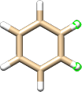
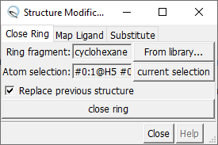
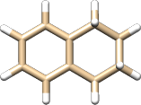
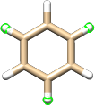
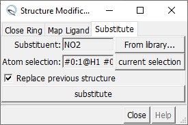
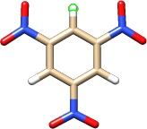
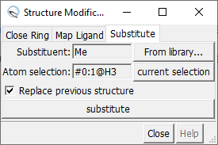
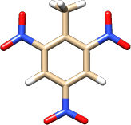

The tool simplifies swapping ligands, adding or changing substituents, and making fused rings. To start the tool, go to → → .
Suppose you want to make tetralin and you have a benzene structure. If your don't have a benzene structure, you can open the benzene from the AaronTools ring library.
Begin by opening the tool.
Next, select two atoms on the benzene that are ortho to each other:

In the tab of the tool, press .
For the ring fragment, press .
We'll use cyclohexane.
If you have cyclohexene in your library, it might produce a better result.

To make the fused ring, press .
You should now have a tetralin molecule.

For this tutorial, we'll walk you through making trinitrotoluene from benzene. If your don't have a benzene structure, you can open the benzene from the AaronTools ring library.
Begin by opening the tool.
Next, select three hydrogen atoms that are all meta to eachother:

In the tab of the tool, press .
Press .
In the substituent list, find "NO2" and press .

Pressing should give you trinitrobenzene.
Next, select one of the remaining hydrogen atoms:

Back in the tool, press .
You can find the methyl substituent in the substituent list like before, or you can just type "Me" into the box.

Pressing should give you trinitrotoluene:
